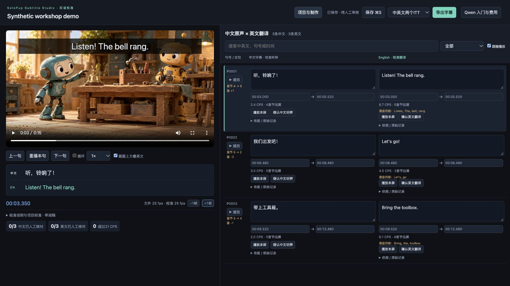
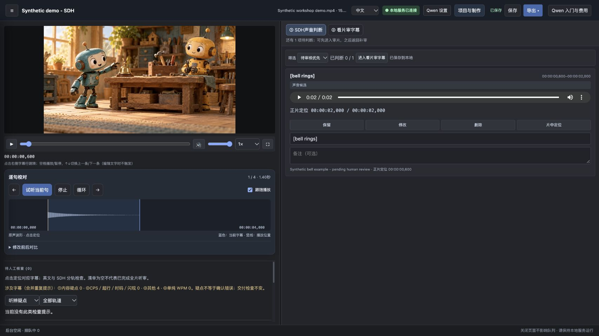
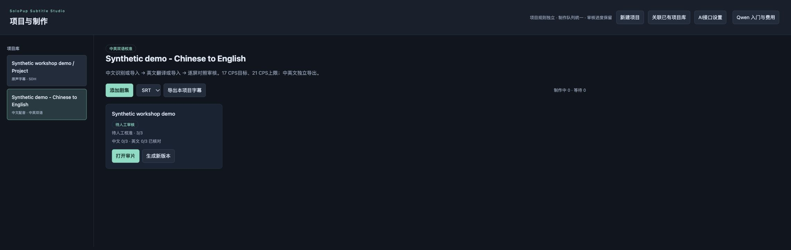

SOLOPUP · MIT 开源 · v2.0.0-rc.5 公开预览版
SoloPup Subtitle Studio
字幕工作台
由 SoloPup 开发。面向 SDH 无障碍字幕，以及跟随中文配音的英文字幕制作的本地工作台。
两大核心亮点
- SDH 无障碍字幕：对照原片审校对白、说话人、重要音效、音乐及声音表现。
- 中文配音配英文字幕：中英同屏对照，跟随中文断句与信息顺序，用节奏和音节估算辅助审校。
面向独立创作者、字幕编辑、无障碍审校者与本地化团队。统一管理剧集、保存修改历史、逐句回放，分别导出 ITT 或 SRT。
从已有字幕开始
导入屏数、时码对应的中英 SRT，即可不使用 AI 账号进行本地审校。AI 初稿制作需要自己的 Qwen API Key 与模型权限。先核对适用试用额度，用真实对白小片段评估，再准备批量计费与预算。通常同一个 Key 从试用继续用于付费调用。
实际界面
以下为使用合成演示数据的实际运行截图，只有播放器场景画面由 AI 生成。字幕为导入的示例文字，与演示视频中的发音不对应，不能证明识别或翻译质量。界面指标与待审核状态真实显示，截图使用中文控件。

中文配音配英文字幕：两轨同时显示，核对对应时码，参考音节估算。

SDH 声音判断：试听合成候选，定位原片，再决定保留、修改或删除。

项目管理与导出：按项目选择工作方式，保留独立审核进度，导出 ITT 或 SRT。
预览版范围
2.0.0-rc.5 为 MIT 许可的公开预览版。运行需要 Python 3.9+、FFmpeg/ffprobe 与现代浏览器。macOS 已在本机验证，Windows/Linux 尚未完成同等级人工验收。双语编辑页使用中文控件，输出仍需人工音画批准；程序检查不代表平台认证。